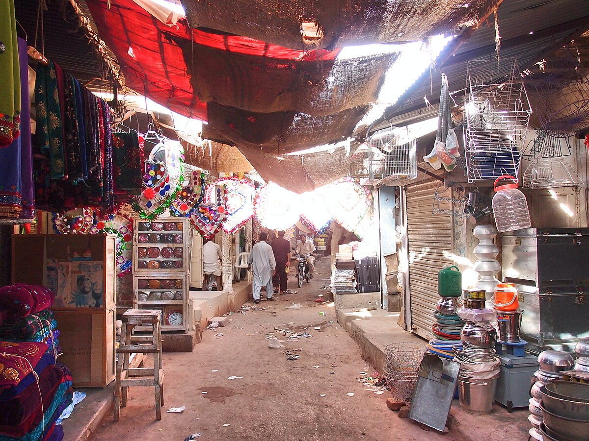
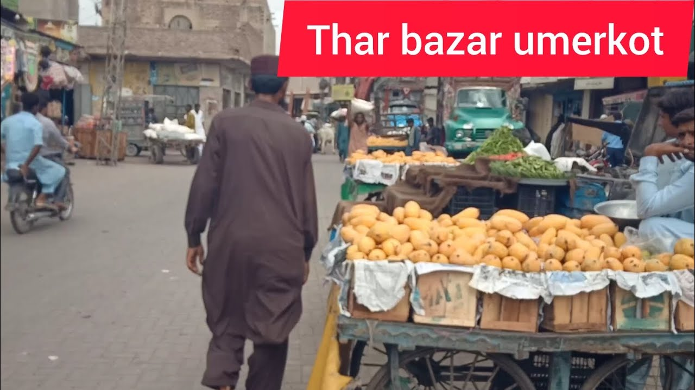
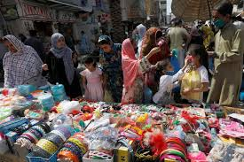

Explore the Markets of Umerkot
Umerkot is home to vibrant markets where visitors can shop for unique items, ranging from local handicrafts to spices and textiles. The markets offer an authentic experience of Umerkot’s rich culture and tradition.
Must-Visit Shopping Spots

Umerkot Shahi Bazar
The heart of Umerkot's shopping scene, featuring local shops selling everything from traditional clothing to local handicrafts.

Thar Bazar
A must-visit for those who love spices! The spice market offers a variety of local spices that add rich flavor to any dish.

Asha Market
Find exquisite handmade items, including pottery, textiles, and jewelry, crafted by local artisans.
Shopping Tips in Umerkot
- Haggle with vendors to get the best price, especially in local bazaars.
- Always carry cash, as not all places accept card payments.
- Look out for unique handcrafted souvenirs that make perfect gifts.